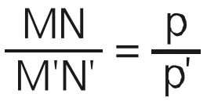

A câmara escura é um dispositivo óptico que permite observar a formação de imagens. Ela consiste em uma caixa ou ambiente fechado com um pequeno furo por onde a luz entra. A luz passa pelo furo e projeta uma imagem invertida do lado oposto. Esse fenômeno ajudou no desenvolvimento da fotografia. A câmara escura é considerada uma das precursoras das câmeras fotográficas atuais.
Graças ao princípio da propagação retilínea da luz, podemos chegar em uma equação para a câmara escura. Colocando-se um objeto MN na frente do orifício, é possível gerar uma imagem M’N’ no fundo da câmara escura, sendo essa imagem invertida e menor que o objeto MN. Por conta da semelhança entre os triângulos MNO e M’N’O obtemos a seguinte equação:➡️

MN: Tamanho (altura) do objeto;
M’N’: tamanho da imagem;
p: distância do objeto ao orifício (distância do objeto à câmara);
p’: distância do orifício à imagem (profundidade da caixa).